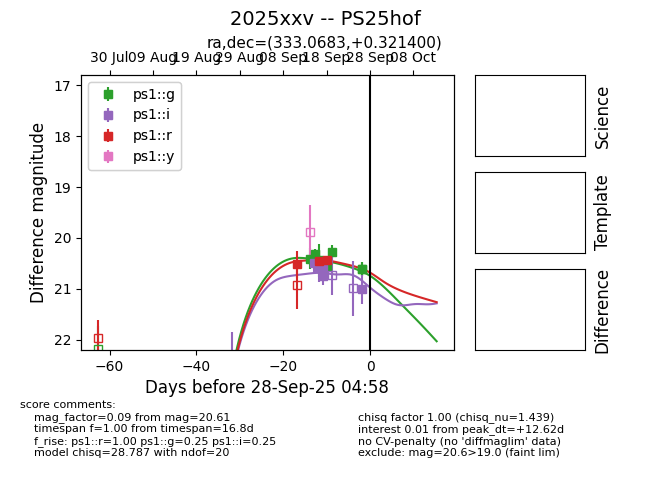
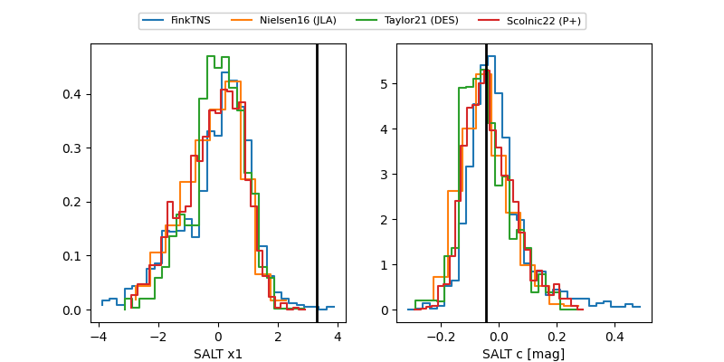

TNS: 2025xxv
YSE: 2025xxv
2025xxv (yse,tns)
PS25hof (panstarrs)
equatorial (ra, dec) = (333.0683,+0.32140)
galactic (l, b) = (61.9736,-42.94391)


last ps1::g=20.61, ps1::i=21.01, ps1::r=20.43
9 ps1::g, 5 ps1::i, 3 ps1::r detections